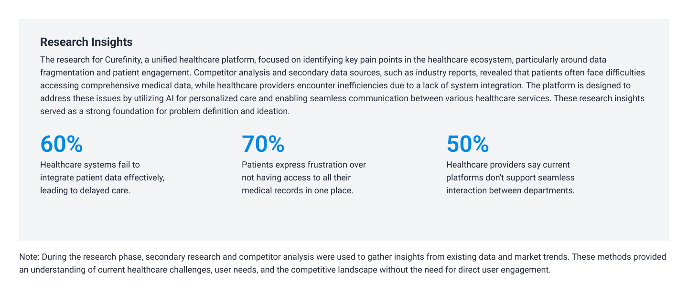

Booking doctor appointments, managing health records, and consulting with doctors online should be easy-but often, it’s not. Many existing healthcare apps feel complicated, require multiple steps to complete simple tasks, and don’t offer a seamless way to connect patients and healthcare professionals.
So, I asked: How can I design a healthcare platform that feels intuitive, fast, and stress-free?
Curefinity was a self-initiated project, where I took on multiple roles to craft a seamless healthcare experience from the ground up.
I was responsible for:
Before jumping into design, I conducted secondary research to understand the common pain points in digital healthcare experiences. Here’s what I found:
🔹 Patients’ struggles:
🔹 Healthcare Professional's Challenges:
🔎Key Insight: Both patients and healthcare professionals need a solution that simplifies communication, ensures smooth scheduling, and reduces administrative stress.
Curefinity was designed as a conceptual, self-initiated project to create a seamless doctor-patient interaction system with three core pillars:
A role-based dashboard ensures that patients and doctors see what’s most relevant to them, reducing cognitive load. Patients get a clean, action-focused homepage, while doctors have quick access to schedules and medical records.
Unlike traditional appointment booking, Curefinity integrates a real-time scheduling system that shows doctors’ available slots instantly. Users can book in just three clicks instead of going through long forms.
A concept feature: Curefinity could use AI-driven insights to help patients track their health trends over time and suggest preventive care measures based on their records.
Curefinity transformed into a functional prototype that reimagines digital healthcare. Though it’s a conceptual project, it represents a real-world problem-solving approach that prioritizes:
👀 Want to explore the full design process?